Атлас мест · ролик от 2 октября 2026
ЧИТА — УЛАН-УДЭ: САМАЯ УБИТАЯ ДОРОГА РОССИИ 😱 | ДОМОЙ на АВТОДОМЕ 6000км | vanlife часть 4
Места из этого ролика — 15
- Паром до Хейхе — с 0:00, Хейхе ▶
- Гостиница "Ерофей Павлович" — с 2:43, Россия ▶
- Улан-Удэ — с 10:47, Улан-Удэ ▶
- Площадь Советов, Улан-Удэ — с 20:38, Улан-Удэ ▶
- Площадь Ленина — с 21:05, Улан-Удэ ▶
- Площадь Советов — с 21:36, Улан-Удэ ▶
- Царские ворота — с 22:07, Улан-Удэ ▶
- Кафе Хатан — с 22:37, Улан-Удэ ▶
- Горячий источник, Ильинка — с 25:37, Ильинка, Бурятия ▶
- Горячий бассейн — с 25:45, Россия ▶
- Байкал — с 30:53, Россия ▶
- Култук, рынок омуля — с 32:56, Култук ▶
- Култук — с 33:01, Култук ▶
- Перевал Култук — с 41:10, Россия ▶
- Красноярск — с 43:02, Красноярск ▶
Паром до Хейхепирс и паром · 👍 Советуем Перевал Култукприрода · 🤔 На любителя
Перевал Култукприрода · 🤔 На любителя
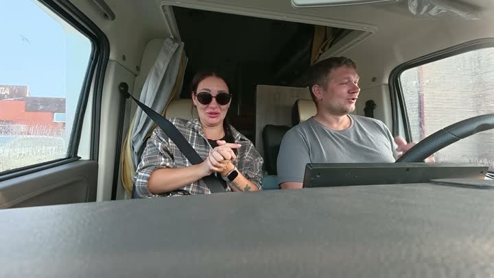
Гостиница "Ерофей Павлович"отель · 🤔 На любителя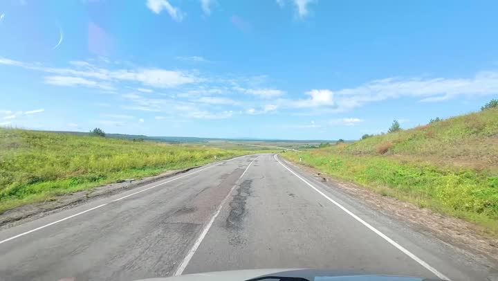
Улан-Удэгорода и районы · 🤔 На любителя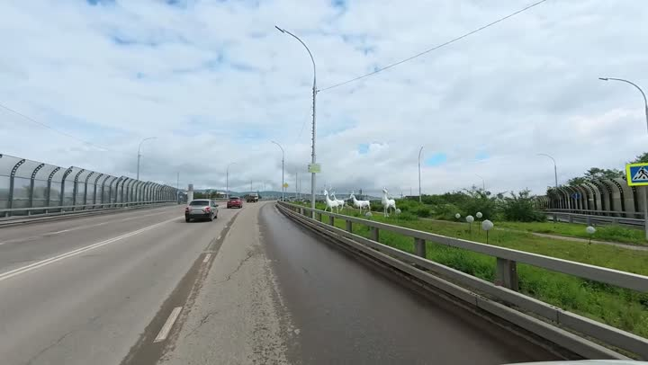
Площадь Советов, Улан-Удэдостопримечательность · 👍 СоветуемПлощадь Ленинадостопримечательность · 👍 Советуем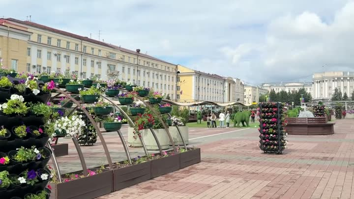
Площадь Советовдостопримечательность · 👍 СоветуемЦарские воротадостопримечательность · 👍 Советуем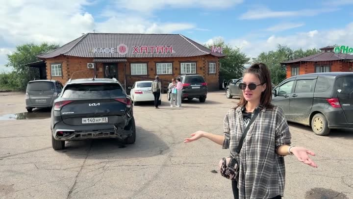
Кафе Хатанкафе · 👍 Советуем · средне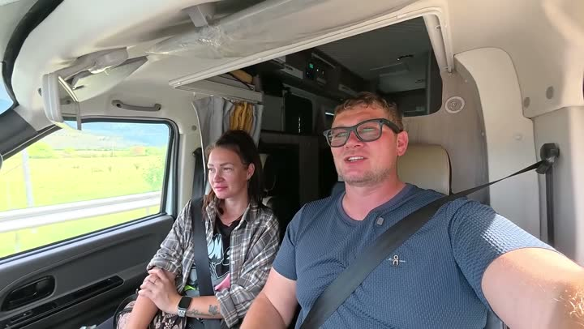
Горячий источник, Ильинкагорячий источник · 👍 Советуем · средне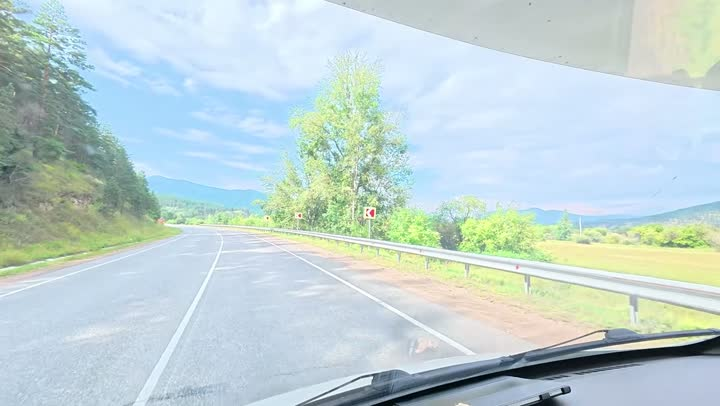
Горячий бассейнгорячий источник · 👍 Советуем · средне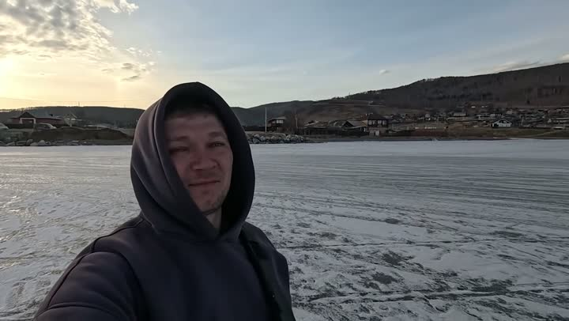
Байкалозеро · 👍 Советуем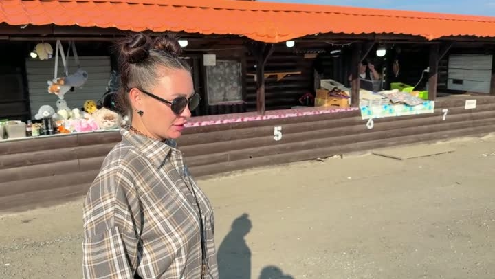
Култук, рынок омулярынок · 👍 Советуем · средне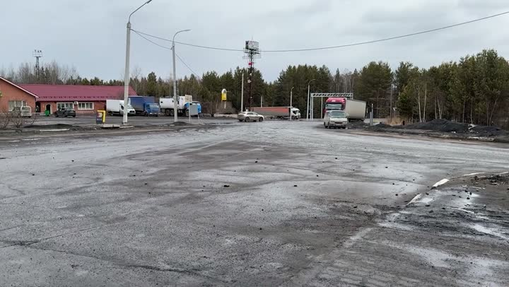
Култукгорода и районы · 🤔 На любителя · дорогоПеревал Култукприрода · 🤔 На любителя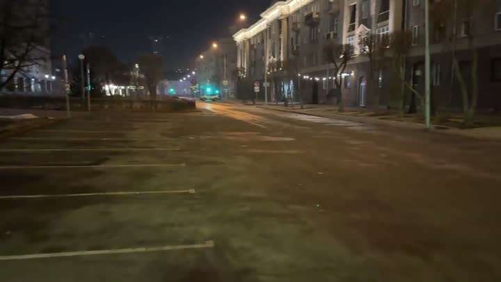
Красноярскгорода и районы · 🤔 На любителяАтлас мест канала «Юля и Дима / БЕЗ ТОРМОЗОВ». Описания составлены по нашим роликам; цены — на момент съёмки. Нашли неточность — напишите нам в Telegram.